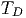
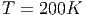
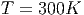
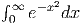

Exemplo 9.6.1. Adams-Bashforth de segunda ordem
![(n+1) (n) h-[ ( (n) (n)) ( (n−1) (n−1))]
y = y + 2 3f y ,t − f y ,t](main4425x.png)
9.5 Ordem de precisão
Todos os métodos de quadratura que vimos até o momento são da forma

- Método do trapézio
![∫ b b − a
a f(x)dx ≈ [f (a ) + f (b)]-2--
= b −-af(a) + b-−-af (b)
2 2
∑2
:= w1f(x1) + w2f (x2) = wjf (xj)
j=1](main3922x.png)
- Método do trapézio com dois intervalos
![[ ( ) ]
∫ b a-+-b b-−-a
a f (x)dx ≈ f (a) + 2f 2 + f (b) 4
( )
b −-a b −-a a +-b b-−-a
= 4 f(a) + 2 f 2 + 4 f (b)
3
:= w f(x ) + w f (x ) + w f(x ) = ∑ w f(x )
1 1 2 2 3 3 j=1 j j](main3923x.png) <<<<<<< HEAD
<<<<<<< HEAD
- Compare os resultados e discuta levando em consideração as respostas às seguintes perguntas: 1)Qual função é mais bem-comportada na origem? 2)Na segunda formulação, qual porção da solução foi obtida analiticamente e, portanto, sem erro de truncamento?
![(n+1) (n) h [ ( (n) (n)) ( (n−1) (n− 1)) ( (n−2) (n−2)) ]
y = y + ---23f y ,t − 16f y ,t + 5f y ,t
12](main4426x.png)
Exemplo 9.6.3. Adams-Bashforth de quarta ordem
 |
Os métodos de passo múltiplo evitam os múltiplos estágios do métodos de Runge-Kutta, mas exigem ser "iniciados"com suas condições iniciais. >>>>>>> 8ffe51d4bbc8f1e500cc9c435f05cb1c6f0ffef3
Resposta. a)-0.2472261, -0.2416451, -0.2404596, -0.2400968, -0.2399563, -0.2398928. b)-0.2393727, -0.2397994,
-0.2398104, -0.2398115, -0.2398117, -0.2398117.

E 9.7.4. Considere o problema de calcular numericamente a integral
 quando .
A principal técnica que temos usado para desenvolver os métodos numéricos é
o polinômio de Taylor:
Integrando termo a termo, temos: Neste momento, é natural investigar o desempenho de um esquema numérico
aplicado a funções do tipo
Definição 9.5.1. A ordem de precisão ou ordem de exatidão de um
esquema de quadratura numérica como o maior inteiro positivo n para o qual
o esquema é exato para todas as funções do tipo
Solução. Temos um sistema de quatro equações e quatro incógnitas dado por:
Da segunda e quarta equação, temos:
Esse esquema de ordem de precisão três e dois pontos chama-se quadratura de
Gauss-Legendre com dois pontos:
E 9.5.1. Encontre os pesos
Resposta.
Resposta. 3
Resposta. 5
E 9.5.4. Encontre os pesos
Resposta.  com ordem 3.
E 9.5.5. Quantos pontos são envolvidos no esquema de quadratura
Resposta. 5, 4, 3
>>>>>> 2ce5bba22e77a9b0d17e57fb0d2efc8029204145
id="tailmainse43.html">
=======
 ,
,  e
e  .
.
![[ ( ) ]
∫ b a + b b − a
f (x )dx ≈ f (a) + 4f ----- + f (b) -----
a 2 ( )6
b-−-a 2(b −-a) a-+-b b −-a
= 6 f(a) + 3 f 2 + 6 f(b)
∑3
:= wjf (xj)
j=1](main3924x.png)
![[ ( ) ( )
∫ b 3a + b a + b
f(x)dx ≈ f(a) + 4f ------- + 2f -----
a ( ) 4 ] 2
a +-3b- b −-a
+ 4f 4 + f(b) 12
( ) ( )
b-−-a b-−-a 3a-+-b- b −-a a-+-b
= 12 f (a ) + 3 f 4 + 6 f 2
( )
+ b-−-af a +-3b- + b-−-a f(b)
3 4 12
5
:= ∑ wjf (xj)
j=1](main3925x.png)


 .
.
 com
com  , ou
seja, Um esquema é dito de ordem
, ou
seja, Um esquema é dito de ordem  se
se


 , temos
, temos  e
e  . Da primeira equação, temos
. Da primeira equação, temos
 . Da terceira equação, temos
. Da terceira equação, temos  .
.


Exercícios
 ,
,  e
e  tais que o esquema de
quadratura dado por
tais que o esquema de
quadratura dado por

 ,
,  ,
,  . O esquema construído é o de Simpson e a ordem de exatidão é
3.
. O esquema construído é o de Simpson e a ordem de exatidão é
3.


 ,
,  e
e  tal que o método de integração
tal que o método de integração


 ?
Qual a ordem do erro deste esquema de quadratura? Qual a ordem de
exatidão desta quadradura?
?
Qual a ordem do erro deste esquema de quadratura? Qual a ordem de
exatidão desta quadradura?

 ou mais, então
ou mais, então

![∫ b b − a ∑2
f(x)dx ≈ [f(a ) + f (b)]---- = wjf (xj )
a 2 j=1](main3936x.png)
 ,
,  e
e  .
. 
![∫ b [ ( ) ] ∑3
f (x )dx ≈ f (a ) + 4f a +-b + f(b) b −-a = wjf (xj)
a 2 6 j=1](main3941x.png)
 ,
, ,
,  ,
,  e
e 

 e as abscissas
e as abscissas  tais que o
esquema de dois pontos
tais que o
esquema de dois pontos

![|----------|----------------|-------------|----------------|-------------------|
| | | | | |
|---f(x)---|-----Exato------|--Trapézio---|---Simpson------|Gauss-Legendre-(2)-|
| | | | | |
| | | | −1 0 1 | √ - √ - |
| | e− e− 1 | e−1 + e | e--+-4e--+-e-- | e− −-33+ e-33 |
| ex | | | 3 | |
| | ≈ 2,35040 | ≈ 3,08616 | ≈ 2,36205 | ≈ 2,34270 |
| | | | | |
|----------|----------------|-------------|----------------|-------------------|
| | | | | |
| | √ -- | | | |
| ∘ ------| 16− 4 2 | | | |
|x2 3+ x3 | 9 9 | 3,41421 | 1,13807 | 1,15411 |
| | ≈ 1,14924 | | | |
| | | | | |
|----------|----------------|-------------|----------------|-------------------|
| | | | | |
| 3 | −1 | | | |
| x2ex | e−-e3--≈ 0,78347 | 3,08616 | 1,02872 | 0,67905 |
| | | | | |
|----------|-------------------------------------------------------------------|
| |](main3960x.png)
![∫ 1 [ ( √ -) ( √ -) ]
f(x)dx ≈ 2- f −---2 + f(0) + f --2-
− 1 3 2 2](main3969x.png)